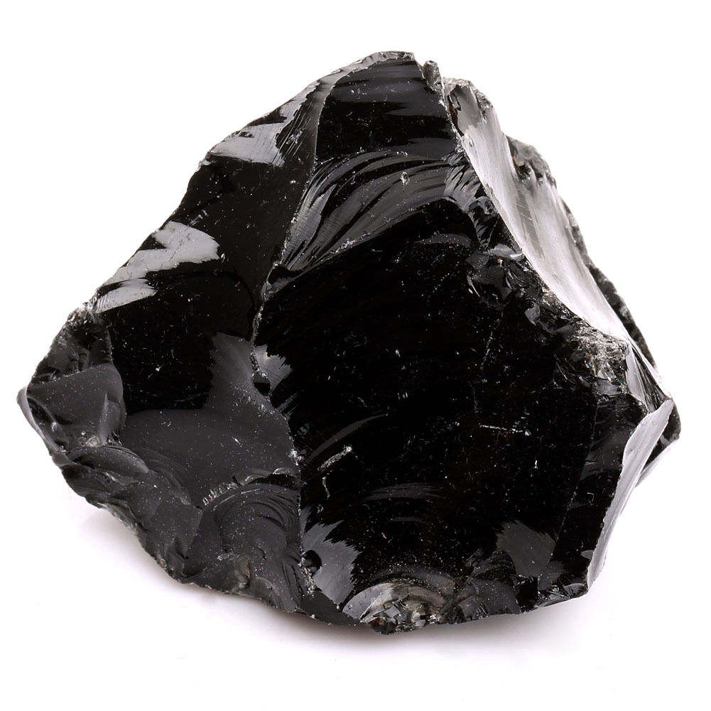
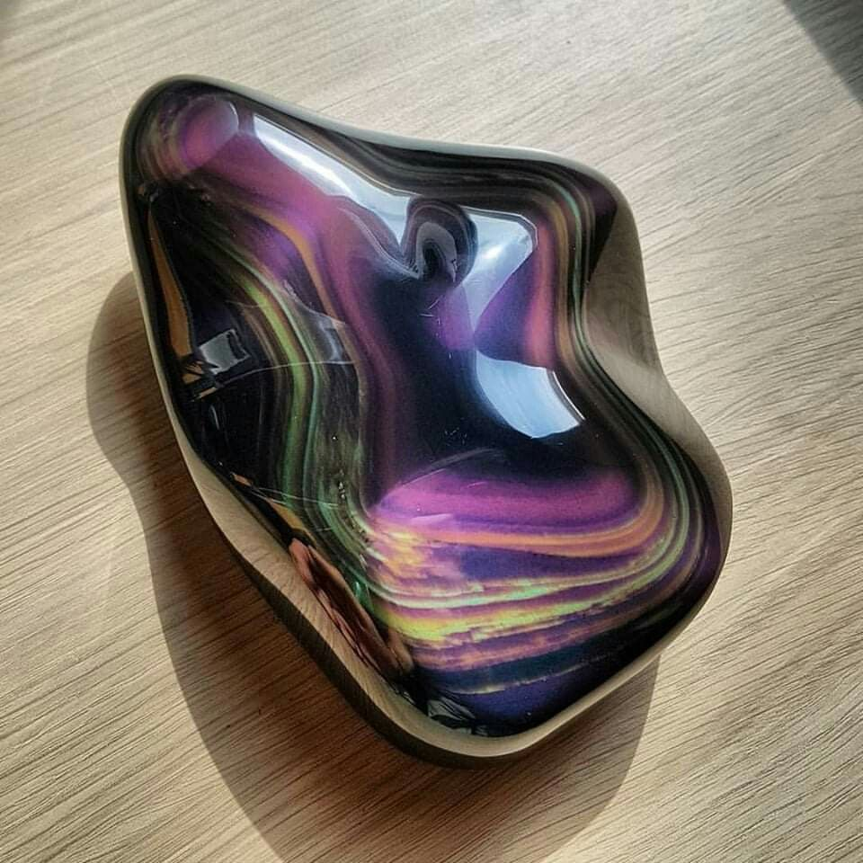
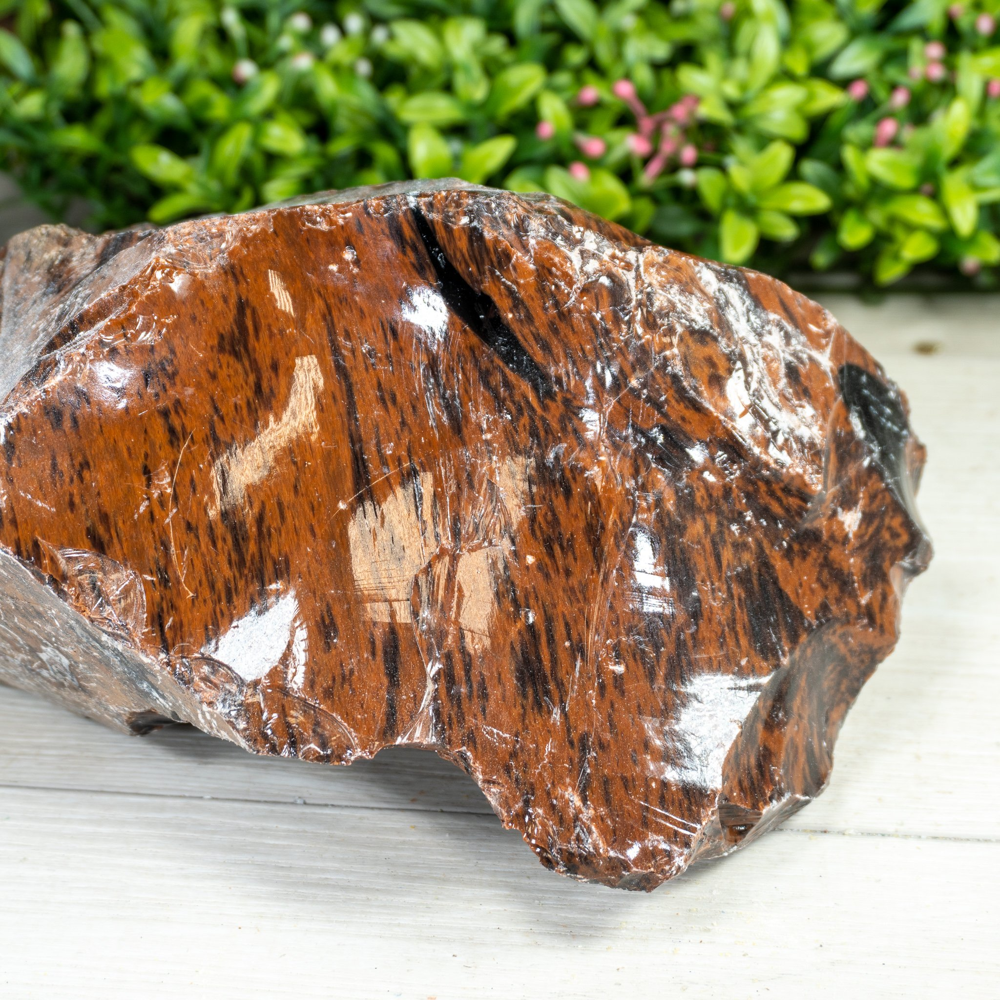
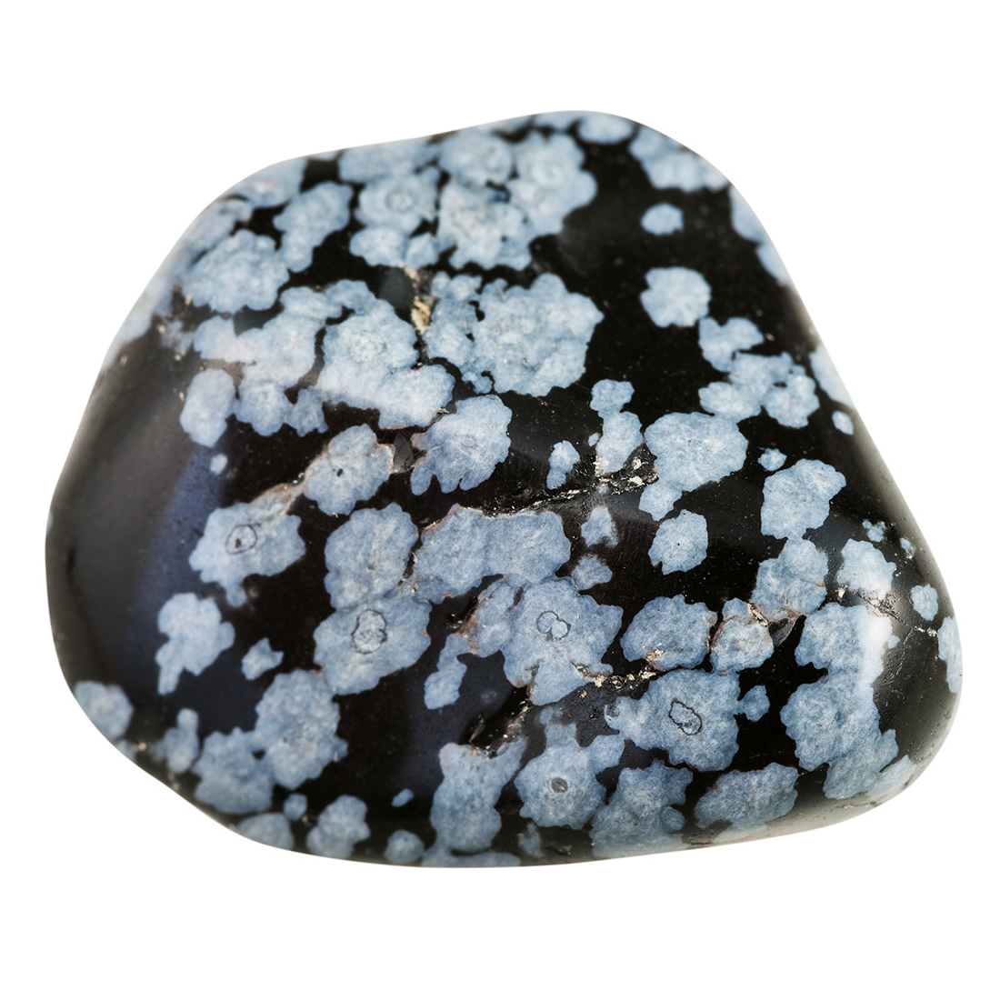
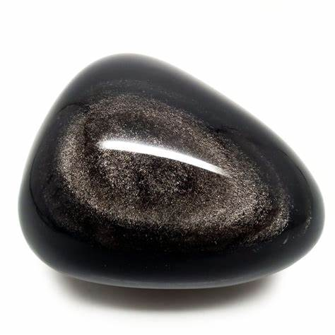
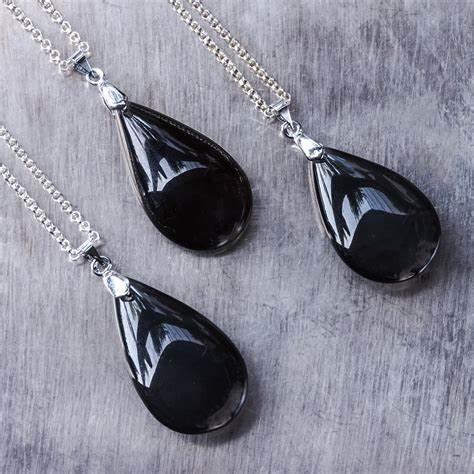
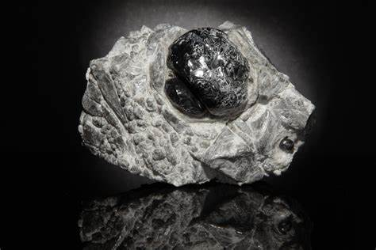
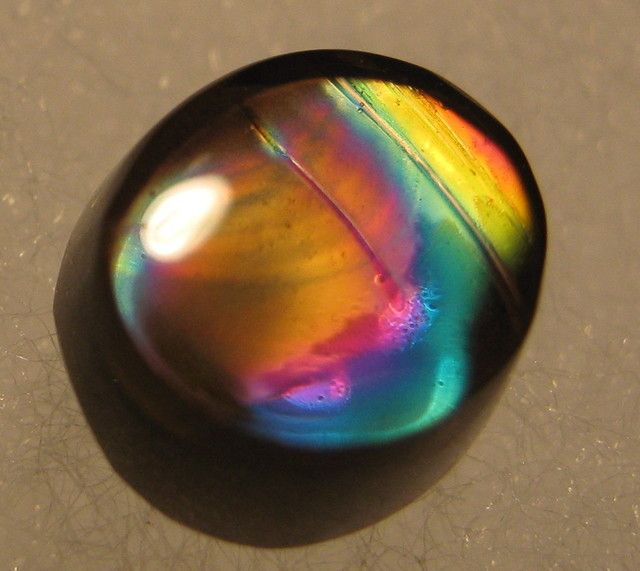

Obsidian: The Volcanic Glass Rock

Chemical Formula: Primarily SiO₂ (Silicon Dioxide) but lacks a defined crystalline structure
Color: Typically black, though can be dark brown, green, red, or rainbow
Hardness: 5-5.5 on the Mohs scale
Crystal System: Amorphous (volcanic glass)
Localities: United States (Oregon, Arizona), Mexico, Iceland, Japan, and Italy
Common Uses: Tools, weapons, jewelry, ornamental objects, surgical instruments
Introduction to Obsidian
Obsidian is a naturally occurring volcanic glass formed when felsic lava cools rapidly without crystallizing. Its smooth glassy texture and sharp edges have made it highly valued by ancient cultures for tools and weapons, and today it remains popular for decorative objects and jewelry. Obsidian is an igneous rock that forms primarily at the edges of volcanic flows where the lava cools quickly, preventing the formation of a crystalline structure.
Known for its striking black color, obsidian can also appear in a range of other hues depending on its chemical composition and the presence of trace elements or gas bubbles trapped during its formation. These varieties include red, green, mahogany, and rainbow obsidian, all of which are used in jewelry and for decorative purposes.
Formation and Types of Obsidian
Obsidian forms when felsic lava (rich in silica) erupts from a volcano and cools so quickly that the minerals do not have time to crystallize. This rapid cooling creates an amorphous glass-like texture. Obsidian is typically found near volcanic areas that experienced rhyolitic or andesitic eruptions.
Key Types of Obsidian:
Black Obsidian
The most common variety, black obsidian, forms from rapidly cooling lava and is often used for tools, weapons, and jewelry due to its sharp edges and deep color.
Rainbow Obsidian
Characterized by its iridescent colors, rainbow obsidian is formed by the inclusion of gas bubbles or mineral impurities during its cooling process. It is highly valued for ornamental objects and jewelry.
Mahogany Obsidian
This variety has streaks of reddish-brown and black, giving it a wood-like appearance. It is often used in carvings and jewelry due to its striking color contrasts.
Snowflake Obsidian
Snowflake obsidian contains white or grey inclusions of cristobalite, a type of silica, which form "snowflake" patterns within the black volcanic glass. It is popular for its unique appearance and metaphysical properties.
Sheen Obsidian (Golden or Silver)
Sheen obsidian has a metallic luster caused by gas bubbles arranged in layers during its formation. This shimmering effect makes it a favorite for jewelry and decorative pieces.
Structure and Properties of Obsidian
Obsidian lacks the internal crystalline structure found in most rocks, classifying it as an amorphous solid or volcanic glass. This unique structure gives obsidian its sharp edges, which have been used throughout history for tools and weapons.
- Hardness: Obsidian rates between 5 and 5.5 on the Mohs scale, making it relatively soft compared to other igneous rocks. However, its glassy nature allows it to fracture into extremely sharp edges.
- Color: While typically black, obsidian can appear in a variety of colors including red, green, and iridescent hues depending on trace minerals and gas bubbles trapped within the glass.
- Fracture: Obsidian exhibits a conchoidal fracture, meaning it breaks into smooth curved surfaces, which can form extremely sharp edges.
- Luster: Obsidian has a glassy, vitreous luster that enhances its appeal in jewelry and decorative objects.
Uses of Obsidian
Obsidian’s combination of beauty, sharpness, and durability makes it a versatile material for both practical and artistic uses. Historically, it was essential in tool-making, while today it is prized in decorative arts and certain industrial applications.
1. Tools and Weapons
Due to its ability to form razor-sharp edges, obsidian was widely used by ancient civilizations for crafting tools, weapons, and cutting implements.
- Arrowheads and Spear Points: Indigenous cultures, including the Native Americans and the Mayans, used obsidian to craft arrowheads and spear points, taking advantage of its sharp edges for hunting and warfare.
- Surgical Blades: Modern surgeons occasionally use obsidian scalpels for precision surgeries because its sharpness far exceeds that of steel scalpels, allowing for cleaner cuts and faster healing.
2. Jewelry and Ornamentation
Obsidian’s glassy appearance and various color forms make it a popular choice for jewelry and ornamental objects.
- Necklaces, Bracelets, and Rings: Obsidian is often cut and polished into cabochons or beads for use in necklaces, bracelets, and rings, particularly in its black, rainbow, or mahogany forms.
- Carvings and Sculptures: Artists often use obsidian for carvings and sculptures as it can be polished to a high shine and shaped into intricate designs.
3. Decorative Use
Polished obsidian is widely used for mirrors, vases, and other decorative items. Its smooth surface and deep color make it a favorite in high-end interior designs.
- Obsidian Mirrors: Ancient Mesoamerican civilizations used polished obsidian to create mirrors, which were often used in ceremonial contexts or as luxury items for the elite.
Buy & Sell Authentic Obsidian Here
Unusual Varieties of Obsidian
Certain varieties of obsidian are particularly prized for their unique appearance and properties, making them highly sought after by collectors and artisans.
Apache Tears
A form of black obsidian found in small, rounded nodules, Apache Tears are named after an Apache legend. These stones are often used for metaphysical purposes, symbolizing grief and healing.
Green Obsidian

While rarer than black obsidian, green obsidian is prized for its deep, forest-green hue. It is often used in jewelry and is associated with the heart chakra in metaphysical circles.
Fire Obsidian
Fire obsidian displays bright flashes of color caused by light reflecting off microscopic layers of iron oxide within the stone. It is one of the most visually striking varieties of obsidian, used primarily for high-end jewelry.
Sourcing Locations of Obsidian
Obsidian is found in regions with active or historically active volcanoes, particularly those with felsic lava flows. Some of the most famous obsidian deposits are located in the Americas, Europe, and Asia.
- Mexico: Mexico has long been a key source of obsidian, particularly for indigenous cultures such as the Aztecs, who used it for tools, weapons, and ceremonial objects.
- Iceland: Iceland is home to some of the best-known European deposits of obsidian, often found in volcanic regions such as the highlands and near active volcanoes.
- Japan: Obsidian is found on Japan’s volcanic islands, particularly in regions like Kyushu, where it has been used historically for tool-making.
- Italy: Mount Vesuvius and other volcanic areas in Italy produce high-quality obsidian, which has been used since ancient times for tools and jewelry.
Where to Find Obsidian in the United States
Major deposits of obsidian are found in states like Oregon, Arizona, California, and New Mexico, where it is often used for tool-making, jewelry, and decor.
Use our map to get exact locations to find garnet in the United States.
Where to find Obsidian in the U.S.
Exploration and Mining of Obsidian
Obsidian is relatively easy to locate in volcanic regions, and its mining generally involves surface collection rather than deep excavation. Obsidian deposits are often exposed at the surface, making them accessible for hand collection or shallow mining.
Exploration
Geological surveys in volcanic regions help locate obsidian deposits, often through mapping recent lava flows. Aerial photography and ground surveys are common methods of exploration.
Mining Methods
Obsidian is usually mined using open-pit techniques or surface collection. Due to its brittle nature, care must be taken during extraction to prevent damage to the glass-like rock.
- Extraction and Processing: Once extracted, obsidian is cleaned and shaped using cutting tools. For ornamental and jewelry purposes, it is often polished to bring out its natural luster and reveal any internal colors or patterns.
Processing
Obsidian is typically cut into slabs or shaped into smaller pieces for use in tools, jewelry, or sculptures. For surgical tools, the obsidian is shaped into ultra-sharp blades through careful knapping and polishing.
Metaphysical Properties of Obsidian
Obsidian has long been associated with spiritual and metaphysical practices due to its protective and grounding qualities. It is often used in meditation, healing rituals, and energy work.
- Protection and Grounding: Obsidian is believed to shield against negative energies and psychic attacks, making it a popular stone for grounding and protection.
- Emotional Healing: Snowflake obsidian, in particular, is thought to promote emotional healing by helping individuals release past traumas and negative patterns.
- Clarity and Truth: Known as a "stone of truth," obsidian is said to reveal hidden truths and bring clarity to situations, helping individuals see their path forward with greater insight.
Famous Finds and Obsidian
Obsidian has been used throughout history in many famous artifacts and locations, highlighting its cultural and historical significance.
- Teotihuacan (Mexico): The ancient city of Teotihuacan was a major center of obsidian production, with extensive workshops dedicated to crafting tools, weapons, and ceremonial items.
- Aztec Obsidian Mirrors: The Aztecs created highly polished obsidian mirrors, which were used in religious rituals and as luxury items for the elite.
- Iceland’s Obsidian Fields: The volcanic regions of Iceland, particularly around the highlands, contain vast deposits of obsidian, often used in local crafts and souvenirs.
- Obsidian Blades in Modern Surgery: Modern surgeons sometimes use obsidian blades for delicate surgeries, as the sharpness of these blades allows for precision cutting with minimal tissue damage.
Caring for Obsidian
Although durable, obsidian requires proper care to prevent damage, especially in jewelry and decorative applications where its glassy texture can be prone to scratching or chipping.
- Cleaning: Obsidian should be cleaned with a soft cloth and mild soap. Avoid abrasive cleaners or harsh chemicals, as these can damage the surface.
- Storage: Store obsidian pieces separately from harder gemstones to avoid scratches. Soft pouches or lined boxes are ideal for storing obsidian jewelry or collectibles.
- Handling: Due to its glass-like nature, obsidian is prone to chipping or breaking if dropped or struck. Handle with care, especially larger pieces or thin slices used in decorative objects.
Buy & Sell Authentic Obsidian Here
Conclusion
Obsidian is a unique and fascinating rock that has played a significant role in human history, from ancient tools and weapons to modern jewelry and surgical instruments. Its sharpness, beauty, and metaphysical properties continue to make it a highly sought-after material across many cultures and industries. Whether used in ancient Mesoamerican rituals or as a cutting-edge tool in modern surgery, obsidian remains one of the most versatile and captivating materials formed by the Earth’s volcanic forces.